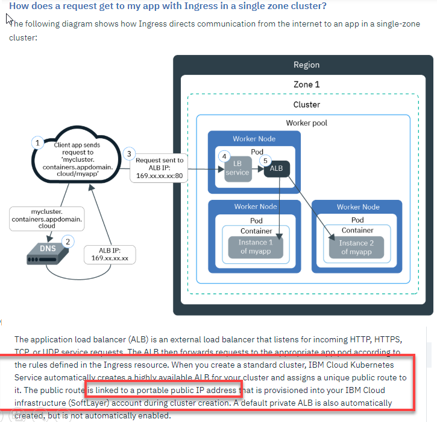

https://console.bluemix.net/docs/containers/cs_ingress.html#opening_ingress_ports
https://console.bluemix.net/docs/containers/cs_troubleshoot_debug_ingress.html#cs_troubleshoot_debug_ingress
https://cloud.ibm.com/containers-kubernetes/solutions/helm-charts/ibm/ibmcloud-iks-debug
